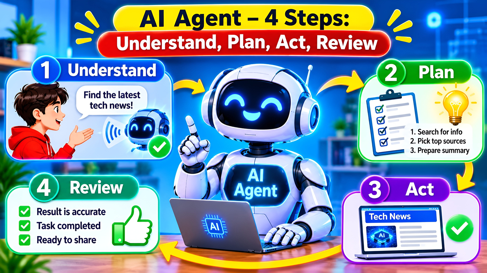
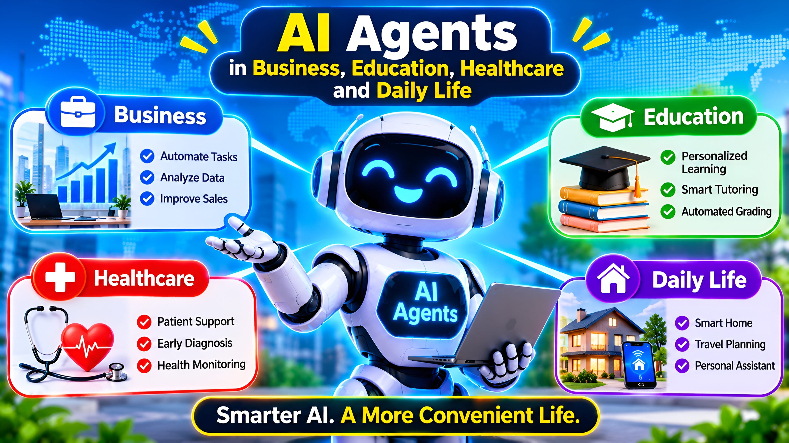

Artificial intelligence (AI) is changing how people use computers and the internet. Most people know AI tools that answer questions, write text, or create images. But a newer type of AI can do more than give answers. It can plan tasks, use digital tools, and take actions to reach a goal. These systems are called AI agents. They are becoming useful in business, education, software development, and many other areas.
1. What Are AI Agents?
An AI agent is a software system that uses artificial intelligence to understand a goal, make decisions, and perform tasks with some level of independence. It can work on a task for a user instead of only giving a written answer.
For example, imagine asking an AI agent to research a topic and prepare a report. It may search for information, read useful sources, organize the findings, and create a report. It can complete these steps using the tools available to it.
Some AI agents can also use memory to keep track of information and work with other agents. However, their abilities depend on how they are designed and what tools they can access.
2. How Do AI Agents Work?
AI agents often use an AI model as their main thinking system. Many modern agents use large language models (LLMs) to understand instructions and decide what to do next. They may also use memory, external data, and digital tools to complete tasks.

Here is a simple example of how an AI agent works:
- Understand: It reads the user's instructions and identifies the goal.
- Plan: It breaks the task into smaller steps and decides what to do first.
- Act: It uses available tools, such as web searches, software, or databases, to perform the required actions.
- Check: It reviews the results and decides whether more work is needed.
- Finish: It provides the result or asks the user for more information or approval.
This process can repeat until the task is complete or the agent reaches a limit. Not every AI agent uses the same steps, but this is a common way to understand how they work.
3. AI Agents vs Chatbots: What Is the Difference?
AI agents and chatbots may look similar because both can understand and respond to human language. However, they do not always do the same work.
- Chatbots: They mainly answer questions and have conversations. Some can also use tools, but many only provide information.
- AI agents: They can plan and perform multiple actions to complete a goal. They may use external tools and work through several steps with less need for constant instructions.
For example, a chatbot can explain how to organize a meeting. An AI agent with the right permissions and tools may check calendars, find a suitable time, and create a meeting invitation.
The difference is not always clear. Some advanced chatbots also have agent-like features, so the name alone does not tell you everything a system can do.
4. Where Are AI Agents Used?
AI agents can support many types of work. Their real abilities depend on the software, data, tools, and permissions they receive.

- Business: Agents can help organize customer requests, process information, and support business tasks.
- Education: They can help students find learning materials, organize study plans, and answer questions.
- Healthcare: They can support administrative work, organize information, and assist with some research tasks. Medical decisions still need qualified professionals.
- Software development: They can help write code, find errors, review files, and support software projects.
- Customer service: They can answer common questions, check order information, and help with customer requests when connected to the right systems.
- Personal tasks: They can help manage schedules, organize information, and perform other digital tasks.
5. How Are AI Agents Changing the World?
AI agents are changing how people and businesses complete digital work. In the past, a person often had to open different apps and perform every step manually. An AI agent can connect to supported tools and handle several steps as part of one task.
For businesses, this may reduce time spent on repeated tasks and help workers focus on other important work. For individuals, agents may make it easier to manage information, complete daily tasks, and use software.
AI agents are also changing software development. Some can help developers understand code, write new parts, test changes, and find errors. However, developers still need to check the code and make sure it works correctly.
These changes are still developing. AI agents do not work perfectly in every situation, and their use depends on the needs and rules of each organization.
6. Benefits and Risks of AI Agents
AI agents can make some tasks easier, but they also bring challenges. It is important to understand both sides before using them.
Benefits of AI Agents
- Save time: They can handle some repeated and multi-step tasks.
- Work with tools: They can connect different software and services to complete tasks.
- Support decision-making: They can collect and organize information to help people make decisions.
- Handle several steps: They can work through a task without needing a new instruction for every small action.
Risks and Challenges
- Wrong results: AI agents can misunderstand instructions or produce incorrect information.
- Privacy risks: Giving an agent access to personal or business data can create security risks.
- Unwanted actions: An agent may take an incorrect action if it has too much access or unclear instructions.
- Human supervision: Important actions and decisions may still need human review and approval.
- Costs: Building and running advanced AI agents can require money, computing power, and technical support.
For these reasons, users and businesses should give agents only the access they need. Important actions, such as payments, account changes, and sensitive decisions, should have proper checks and human approval.
7. What Is the Future of AI Agents?
AI agents are an active area of technology development. As AI models, tools, and computer systems improve, agents may become more useful for complex tasks. Different agents may also work together to complete larger projects.
However, this does not mean AI agents will be able to do everything on their own. They can still make mistakes, face technical limits, and need clear instructions and safety controls.
AI agents are an important step in the development of artificial intelligence. They are moving AI beyond simple questions and answers toward systems that can plan and perform real tasks. Learning how they work today can help people understand the technology that may become a bigger part of everyday life.